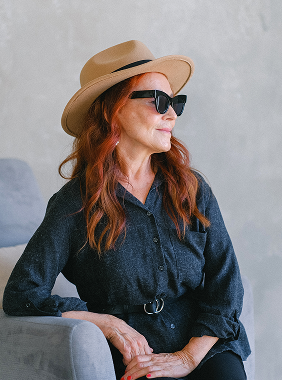
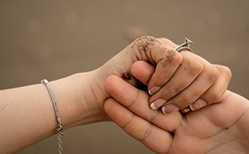
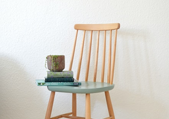

Как не утонуть в тревоге и управлять своими страхами
Содержание
Заголовок h3
Один из самых важных навыков, которые может дать работа с психотерапевтом — умение в разных ситуациях по-разному обходиться со своими эмоциями. Снять этот процесс с автопилота и перевести его в поле сознания.
Давайте, к примеру, разберем тревогу. Можно разложить перед собой целую коллекцию доступных реакций и выбрать нужную.
Мы знаем, что нуждаться в помощи и поддержке в трудные периоды жизни абсолютно нормально для любого человека, и стремимся сделать психотерапию безопасной, удобной и доступной каждому.
Ана Крымская
Что еще можно делать с тревогой?
- Управлять ей через что-то внешнее: включать музыку, которая создает другое настроение, сесть за работу с цифрами, читать блоги, которые вас успокаивают и отвлекают.
- А еще порой можно разрешить себе тревогу заесть чем-то вкусным. Это не самая здоровая стратегия, но иногда она вполне рабочая.
Чем шире доступный вам репертуар реакций и чем более осознанно вы можете выбирать из него то, что лучше всего подойдет в каждой конкретной ситуации, тем больше будет ваша устойчивость к стрессу, депрессии, неопределенности, да и к жизни в целом.
Мы знаем, что нуждаться в помощи и поддержке нормально. Важно постепенно расширять доступные реакции и выбирать то, что помогает именно вам.
Одна из ключевых задач психотерапии как раз и заключается в том, чтобы расширять репертуар реакций и обучать человека пользоваться доступными ему реакциями.

Чем шире доступный вам репертуар реакций и чем более осознанно вы можете выбирать из него то, что лучше всего подойдет в каждой конкретной ситуации, тем больше будет ваша устойчивость.
Иногда можно разрешить себе маленькие способы поддержки: замедлиться, обратиться за помощью или просто сделать паузу.
Упражнение #1
Нужно последовательно напрягать и расслаблять каждую мышцу в теле на несколько секунд. Начать можно с пальцев ног и постепенно подниматься вверх.
Что еще можно делать с тревогой?
- Управлять ей через внешние действия: музыку, простые задачи, прогулку или разговор с близким человеком.
- Разрешить себе не быть идеальным и выбрать самый мягкий доступный способ поддержки.

Чем шире доступный вам репертуар реакций и чем больше осознанно вы можете выбирать из него, тем больше будет ваша устойчивость к стрессу.
Упражнение #2
Нужно последовательно напрягать и расслаблять мышцы. Смысл в том, чтобы через напряжение дать стрессу выход, а затем вернуть тело в спокойное состояние.

Чем шире доступный вам репертуар реакций, тем проще подобрать подходящий способ поддержки.
Чем шире доступный вам репертуар реакций, тем больше будет устойчивость к стрессу и неопределенности.
Одна из ключевых задач психотерапии как раз и заключается в том, чтобы этот репертуар расширять и обучать человека пользоваться доступными ему реакциями в той последовательности, пропорции и объеме, которые подходят именно ему. Без оглядки на то, "как правильно" или "как у других".
Упражнение #1
Нужно последовательно напрягать и расслаблять каждую мышцу в теле на несколько секунд. Напрягать стоит довольно сильно, чтобы потом отчетливее ощущать расслабляющий эффект. Начать можно с пальцев ног и постепенно подниматься вверх. Смысл в том, чтобы через напряжение дать стрессу выход, а затем вновь привести себя в спокойное состояние через расслабление